Café de especialidad y brunch en el Barri Vell
Desayunos, brunch y comidas con café de especialidad. Cada día de 8:00 a 16:00 en el Carrer del Bellaire.
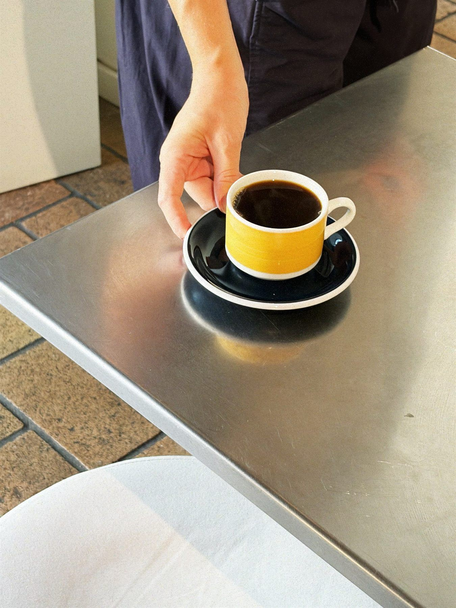
Un café bien hecho, un plato bonito y una mesa al sol. Así empiezan los buenos días en Girona.
Empezamos el día con café de especialidad y la cocina está abierta hasta las 15:00: brunch, tostadas, platos para comer y algo dulce.
- 4,5en Google · 614 reseñas
- 23,6kseguidores en Instagram
- 8–16abierto todos los días
De la cocina
Carta completa →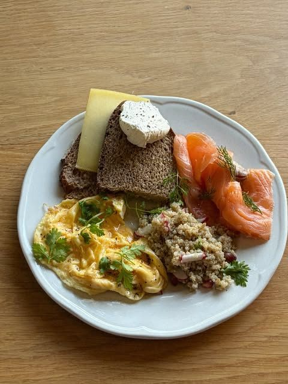
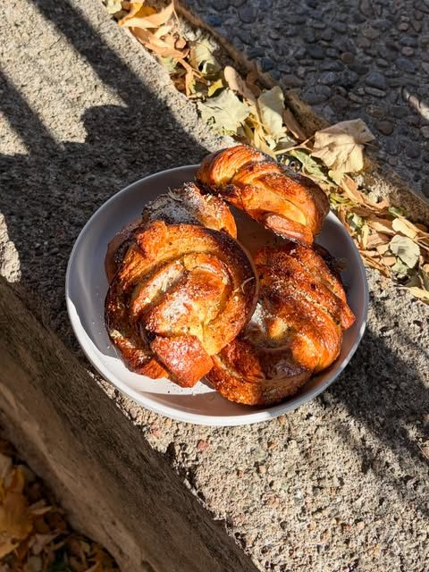
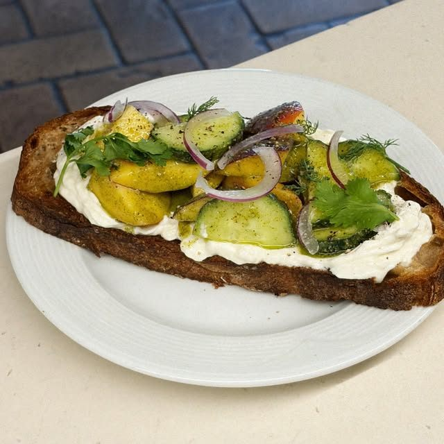
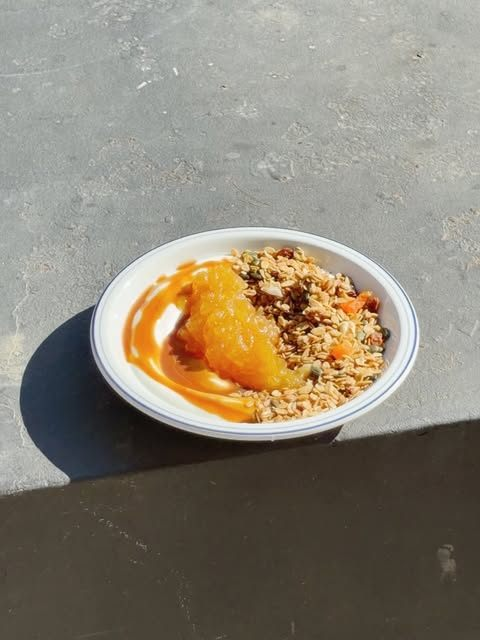
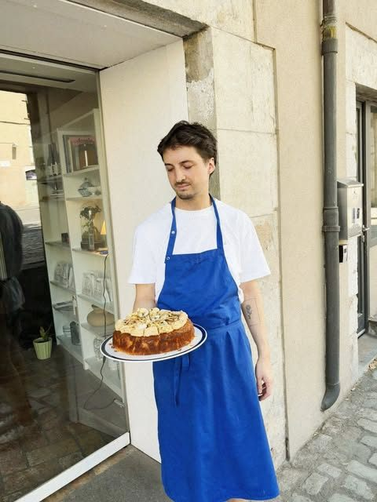
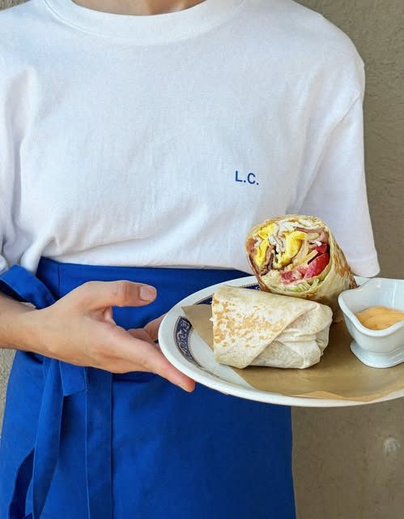
Pide para compartir
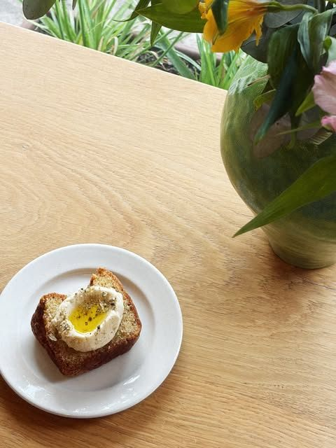
Café, algo dulce, algo salado. La mesa se llena sola.
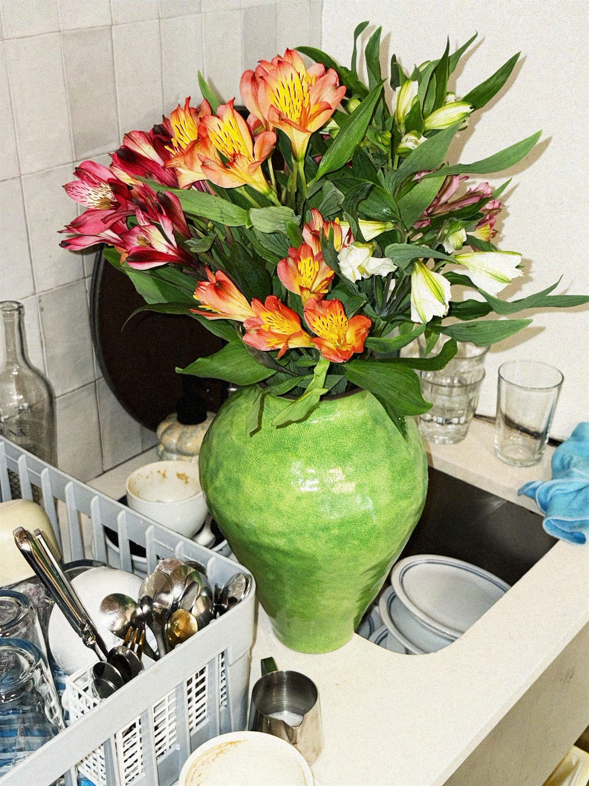
Luz, flores y azul
Un local pequeño y luminoso en el corazón del Barri Vell, con barra junto a la ventana, flores en la barra y el equipo de delantal azul.
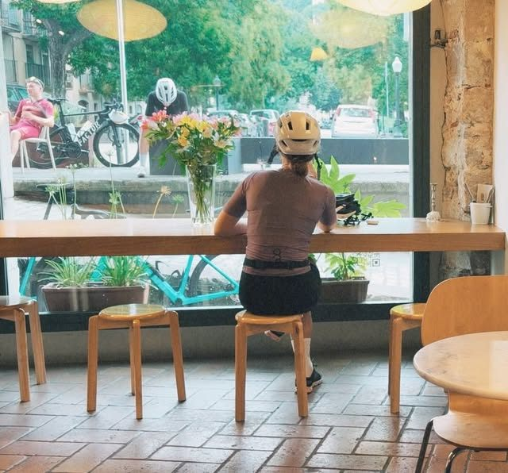
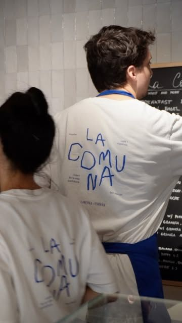
Carrer del Bellaire, 7
- Horario
- Cada día de 8:00 a 16:00. Cocina hasta las 15:00.
- Dónde
- Barri Vell de Girona, 17004
- @lacomunacafe